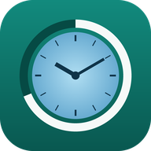

About Rwendo
Placement hours and supervision, in one place.
What is Rwendo?
Rwendo is the Shona word for a journey or a trip — the road you travel rather than a single step on it. A placement is exactly that: a long stretch of days, hours and supervision that adds up to a qualification.
Rwendo is a time-tracking application designed to help students record, manage and review the hours they complete during placements, internships, practicums and professional experience — and to let a supervisor verify those hours inside the same app.
Instead of relying on paper notes or manually calculating hours, the app lets you start and finish a shift, automatically calculates the time completed and keeps a history of your placement activity.
Your placement goal
You set your own required hours the first time you open the app, and you can change the number at any time in Settings. Nursing, social work, teaching, counselling, psychology and trades placements all have different requirements, so nothing is fixed to one programme.
The default is 460 hours, with one-tap presets from 100 to 1000.
Once a target completion date is set, the app works out the weekly pace you need and forecasts your finish date from the hours you have logged so far.
Supervisor notes and sign off
Your supervisor can work directly in the app rather than signing a printout. On any shift, supervision session or whole week they can leave a dated note under their own name, and approve the hours they have checked.
Approval is protected by a supervisor PIN. The supervisor sets it the first time they use it, and Rwendo stores only a one-way hash of it — never the PIN itself. Notes, sign off, and removing a sign off each ask for the PIN.
Once a shift is signed off it is locked: it cannot be edited or deleted until the supervisor removes the sign off with their PIN. The Today and Progress tabs show approved hours and hours still waiting for sign off next to your usual totals, and the printable report sets approved hours against pending ones.
Key Features
- Start and finish shift timer
- Automatic calculation of placement hours
- Add previous or missed shifts manually
- Edit and delete recorded shifts
- Record unpaid break time
- Weekly, monthly and total-hour summaries
- Progress tracking toward required placement hours
- Google Sign-In
- Private cloud synchronisation using Firebase Firestore
- Local offline storage
- CSV export
- Printable / PDF placement records
- Backup and restore
- Light, dark and system appearance, with eight accent colours
- Completion forecast and weekly pace guidance
- Placement insights and eight-week activity chart
- Milestone celebrations
- Professional placement report for PDF or printing
- Supervision log with topics, reflections, actions and sign-off
- Supervision log included in full on the printable report
- Supervisor notes on any shift, supervision session or week, each showing the supervisor's name and date
- Supervisor sign off per shift and per whole week, recording name, date and hours approved
- Approved hours and hours awaiting sign off shown beside your totals
- Signed-off shifts locked against editing and deletion
- Supervisor PIN, stored only as a hash, for every supervisor action
- Notes and sign-off details carried into the report, the CSV export and backups
- New shifts prefilled from your usual hours
- Tag hours by activity, with a breakdown chart and report section
- Clickable month calendar shaded by how long each day was
- Weekday pattern, supervision-due tracker and missed-day prompts
- Guided first-run setup with required-hours presets
- A separate private record for every person who signs in
- Installable on a phone and usable with no internet connection
Privacy and Ownership
Each signed-in user has their own placement record. Placement data is stored under the user's Firebase account identifier and access is controlled using Firebase Authentication and Firestore Security Rules. Rwendo uses its own Firebase project and its own browser storage, kept separate from any other app published by the same developer.
On a shared computer each account is kept in its own separate store on the device as well, so signing in never mixes your hours with someone else's and signing out hides your record from the next person.
More information is available on the Privacy Policy page.
Who is it for?
Rwendo is intended for students and trainees who need a straightforward way to document hours completed as part of practical learning, workplace experience or professional placement requirements, and for the supervisors who have to verify them. It is free to use — share the link with anyone on your course and each of you gets your own private tracker.